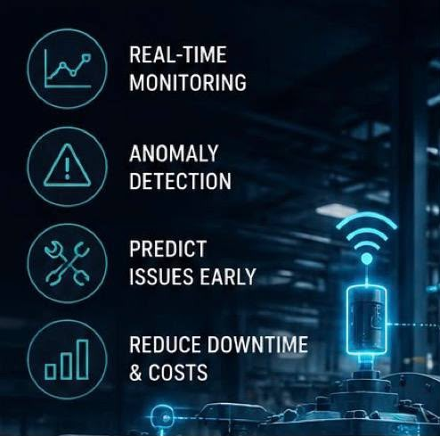

Predictive
Maintenance
System
Continuous multi-axis vibration analysis, thermal variance tracking, and current monitoring. Detect failures before they become downtime.

Live Health Index & Interactive Fault Injection
Physics-based real-time telemetry processing with Remaining Useful Life (RUL) estimation and ISO 10816 vibration classification.
Fault Injection & Stress Simulation
Trigger realistic mechanical and thermal fault scenarios to validate real-time alarm handling, health degradation, and instant Telegram dispatches.
Daily Sensor Input
Submit readings to log analysis. Values exceeding thresholds trigger live alerts on the Overview page.
Analytics & Logs
Multi-metric trend charts and historical sensor readings with status classification.
Multi-Metric Telemetry
Temperature · Vibration · Current · RPM
Sensor Reading Logs
Chronological — danger rows highlighted
| Timestamp | Status | Temp (°C) | RPM | Vibration X / Y / Z | Current (A) |
|---|